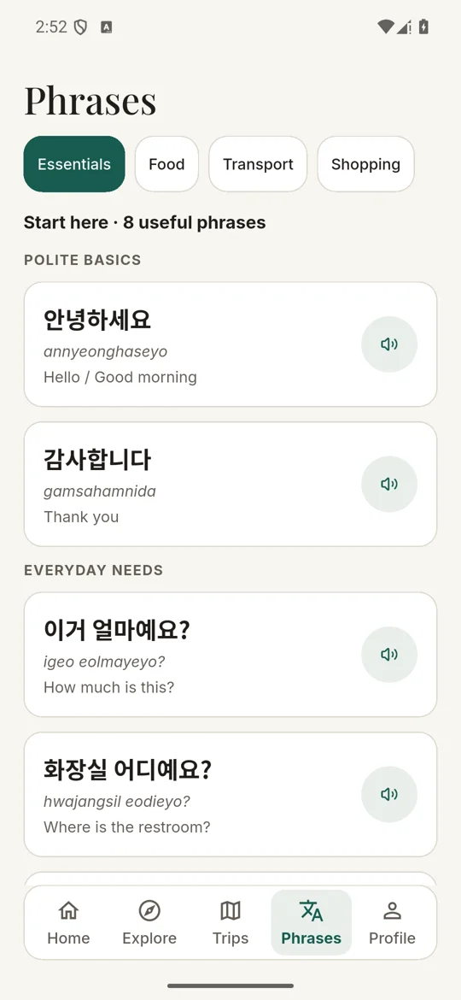
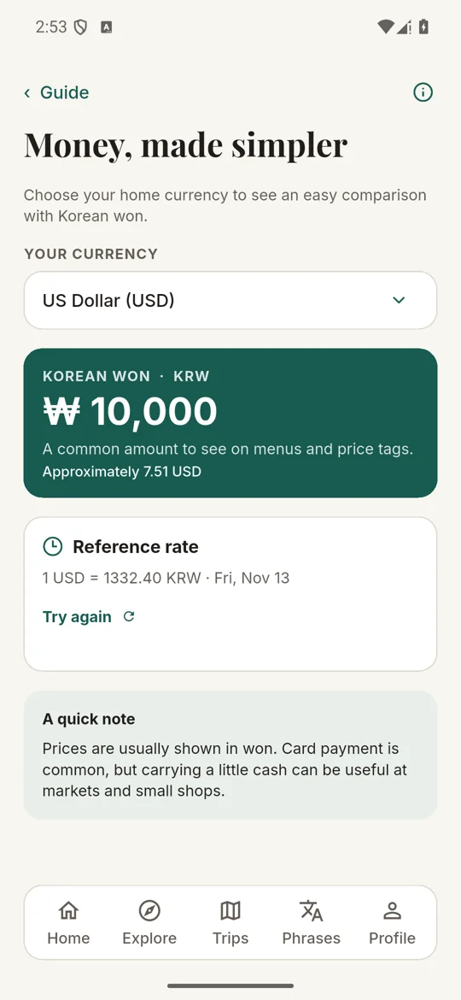

Useful before impressive.
We focus on the questions that come up while travelling: where to go, what to say, and how to understand everyday prices.
어디로 갈지, 어떤 말을 할지, 가격을 어떻게 이해할지. 여행 중 실제로 필요한 질문에서 시작합니다.
HELLO LABS · DIGITAL EXPERIENCES
Less figuring things out.
More finding your own way.
We’re building thoughtful apps that make exploring Korea feel a little more familiar, from the first hello to your next discovery.
한국을 만나는 더 편안한 방법.

01 / THE STUDIO
Hello Labs builds digital tools that help make unfamiliar places feel more approachable.
Our first focus is Hello Korea: a travel companion bringing city inspiration and practical travel tools into one calm, considered experience.
Hello Labs는 낯선 곳에서도 편안하게 여행할 수 있도록 돕는 앱을 만듭니다. 첫 번째 프로젝트인 Hello Korea에 한국 여행의 발견과 준비를 담고 있습니다.
We focus on the questions that come up while travelling: where to go, what to say, and how to understand everyday prices.
어디로 갈지, 어떤 말을 할지, 가격을 어떻게 이해할지. 여행 중 실제로 필요한 질문에서 시작합니다.
Our design direction is calm and readable, with city inspiration and practical tools easy to find.
복잡함보다 명확함을 지향합니다. 도시의 매력과 실용적인 정보를 차분하고 읽기 쉬운 화면에 담습니다.
Hello Korea is still taking shape. Real questions and thoughtful feedback help guide what we improve next.
Hello Korea는 개발 중입니다. 실제 여행자의 질문과 피드백을 바탕으로 경험을 다듬어 갑니다.
OUR PROJECTS
City inspiration, travel phrases and practical tools for your time in Korea.
한국에서의 여행을 위한 도시 안내와 실용적인 도구.
Explore the app →Planning & developmentA separate Korea-focused flight companion, designed to connect with the main app.
본 앱과 연결되는 한국 중심 항공 여행 앱 프로젝트.
Explore the project →02 / OUR FIRST CHAPTER
Your trip to Korea, made easier.
도시를 발견하고, 여행의 작은 순간까지 준비하세요.
Start with a city guide, find inspiration for your day, and keep practical information close.
도시 소개와 가이드, 날씨, 여행 도구를 홈 화면에서 만나보세요.
Find a useful phrase for everyday encounters, from a polite greeting to asking a price.
상황별 한국어 표현에 로마자 표기와 영어 뜻을 함께 제공합니다.

Understand a familiar won amount in your home currency before reading a menu or price tag.
기준 통화를 선택하고 원화 금액과 비교해 보세요. 표시 금액은 참고용입니다.

Actual development screenshots. Features and appearance may change before release. Android launch planned for January 2027.
03 / WHO WE’RE BUILDING FOR
For travellers who want an approachable starting point, without knowing every district, phrase or local habit in advance.
한국이 처음인 여행자에게, 도시와 언어를 알아가는 편안한 출발점을 제공합니다.
For returning visitors looking for city inspiration and useful tools alongside the places they already love.
다시 찾는 여행자에게, 익숙한 곳 너머의 발견과 실용적인 도구를 전합니다.
For people spending more time in Korea who want travel phrases and currency context close at hand.
한국에서 더 오래 머무는 사람에게도, 일상 속 표현과 여행 정보를 가까이 둡니다.
A SMALL MOMENT, MADE SIMPLER
다음 목적지를 고민하는 순간부터, 첫 인사를 건네는 순간까지.
Open a city guide and get a feel for your next stop.
도시 가이드로 오늘의 여행을 준비하세요.
Look up a greeting or a useful everyday question.
인사와 생활 표현을 찾아보세요.
Use the currency guide to build a sense of Korean won.
원화 금액에 대한 감각을 익혀보세요.
04 / A FEW GOOD QUESTIONS
궁금한 점을 먼저 확인해 보세요.
Not yet. Hello Korea is in development, with an Android launch planned for January 2027. The exact release date and final features may change. The screens on this website are development previews.
아직 정식 출시 전이며, 2027년 1월 Android 출시를 목표로 개발 중입니다. 정확한 일정과 최종 기능은 변경될 수 있습니다. 이 사이트의 화면은 개발 버전입니다.
Hello Labs is the team behind the product. Hello Korea is our Korea travel app project. This is the Hello Labs introduction website, not the app itself.
Hello Labs는 서비스를 만드는 팀이고, Hello Korea는 한국 여행 앱 프로젝트입니다. 이 웹사이트는 Hello Labs를 소개하는 공간입니다.
The previews show a city-focused home screen, a Korean phrase guide and a currency guide. They illustrate the current design and feature direction, rather than a guarantee that every function is ready for release.
도시 중심의 홈 화면, 한국어 표현 가이드, 통화 가이드를 볼 수 있습니다. 현재의 디자인과 개발 방향을 소개하는 것이며, 모든 기능의 출시 준비가 끝났다는 의미는 아닙니다.
No. These are captured app screens, not live data on this website. Currency comparisons are for reference and do not guarantee the rate offered by a bank, card issuer or exchange provider.
아닙니다. 앱에서 촬영한 화면으로, 웹사이트의 실시간 정보가 아닙니다. 통화 비교는 참고용이며 실제 은행·카드사·환전 업체의 적용 환율을 보장하지 않습니다.
Email contact.hello.labs@gmail.com. Tell us what you’re working on or what you’d like to see improved. If you share a screenshot, please remove account details and other personal information first.
위 이메일로 문의해 주세요. 개선 의견이나 협업 내용을 알려주시면 됩니다. 스크린샷을 보내는 경우 계정 정보 등 개인정보는 먼저 가려주세요.
05 / LET’S TALK
Questions, feedback, or a possible collaboration?
We’d love to hear from you.
서비스 문의와 협업 제안은 이메일로 보내주세요.